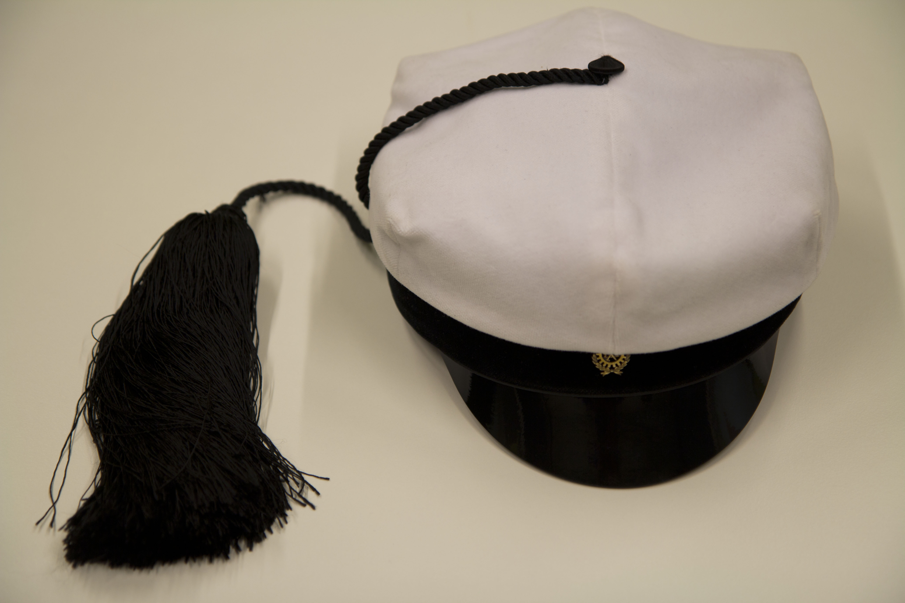

Waarin viikkotiedote 10/2016 -
07.03.2016 fuksit / viikkotiedote / vappupokemon /
Moikka,
Nähdään!
<3 ultsi
Sisällysluettelo
- Tärkeää
- Teekkarilakkitilaus!
- Otaniemipäivä - to 10.3.
- Waarin päivystysaika
- Loput waarin wartit!
- Sitsit-työpiste jaossa: 12.3. tai 23.3.
- Korvaa M0-työpiste työskentelemällä KIK:in vujuilla!
- Fuksi- ja kilta-asiat
- Leadin excu - ti 8.3.
- Otaniemipäivä - to 10.3.
- Basketball - Lenskin Dynamo vs. NDU - pe 11.3. klo 22:10
- Futurice Space Tyckiting Hackathon - ma 14.3. klo 15:00
- TiK-jäynä - ti 15.3. klo 18:00
- Profit Software excu - to 17.3. klo 17:00
- Titeenien taistot 2016 pe - 18.-20.3.
- Terry Pratchett's GUARDS! GUARDS! - to 24.3.
- AYY & Muut
- Opintotuesta leikataan! Opintotukimielenosoitus Helsingissä - ke 9.3.
- Naistenpäivän tempaus päärakennuksen aulassa
- Vappupokemon!
Tärkeää
1. Teekkarilakkitilaus!

Fuksimajurin tervehdys
Arwon fuksit.
Olen saanut ilolla seurata edesottamuksianne läpi syksyn. Tähänastisessa toiminnassanne olette osoittaneet erinomaista teekkarihenkisyyttä ja reipasta tekemisen meininkiä. Puhun koko fuksitoimikunnan puolesta, kun sanon, että olemme teistä kaikista erittäin ylpeitä. En ole kuitenkaan vielä täysin vakuuttunut siitä, kannattaako teille Wappua järjestää. Tulevat tekonne sen ratkaiskoot.
Mikäli tulen myöhemmin päätöksen Wapun järjestämisestä tekemään, on kuitenkin täysin selvää, että tulevat teekkarit tarvitsevat puhtaanvalkoiset tupsulakit juhlapäivää ja sen jälkeistä teekkarielämää varten. Tästä syystä olen päättänyt antaa teille jo nyt mahdollisuuden tilata teekkarilakin. Lakin tilataksenne suorittakaa seuraavat toimenpiteet:
1) Suuntaa AYY:n Otaniemen palvelupisteelle lakkia sovittamaan. Älä tilaa teekkarilakkia ylioppilaslakin koon perusteella. Vaikka tupsu veikeä onkin, saattaa se lakkia kummasti kallistaa, siksi onkin tärkeää, että löydät juuri sinulle sopivan lakin.
2) Päätä, kumman valmistajan lakin haluat: Velmard vai Wahlman? Älä tee päätöstä kokeilematta ensin!
3) Suuntaa osoitteeseen https://lakkitilaus.ayy.fi ja tilaa lakki. Lomake aukeaa tiistaina 23.2. klo 12:00. Tilaaminen vaatii sisäänkirjautumisen Aalto-tunnuksilla. HUOM! Tilaus on sitova, joten ole huolellinen sitä tehdessäsi!
4) Huomioi lakkien saatavuus! Velmardin lakkeja on tilattavissa yhteensä 350 kappaletta, Wahlmanin lakkeja riittää kaikille sen halajaville. Jos Velmardin lakit loppuvat, lomake ohjeistaa sinua tilaamaan Wahlmanin lakin.
5) Huomioi tilausajat! Mitä aikaisemmin Wahlmanin lakin tilaat, sitä halvempi lakki on. Velmardin lakki on samanhintainen koko tilausjakson ajan.
6) Lakkien tilausajat ja hinnat ovat seuraavat:
a. Wahlman: Tilausjakso 1: 23.2.-11.3. Hinta: 103,00€ / TF-malli: 116,00€
b. Wahlman: Tilausjakso 2: 12.3.-31.3. Hinta: 118,00€ / TF-malli: 135,00€
c. Velmard: Tilausjakso: 23.2.-31.3. Hinta: 50,00€
7) Tilaamisen jälkeen saat sähköpostitse vahvistuksen tilauksestasi. Lakin maksuohjeet lähetetään myöhemmin Oodissa ilmoittamaasi kotiosoitteeseen.
Tekniikan kehdossa,
Tuomas Ranta-aho
Fuksimajuri
"Suomessa kaikki hullut saavat valkolakin. Häiriintyneimmät heistä merkitään tupsulla."
Teekkarilakista:
Teekkarilakki eli teekkarien tupsulakki on tekniikan opiskelijoiden ylin ja arvokkain tunnus. Lakilla on pitkä historia, ja nykymuotoinen teekkarilakki juontaa juurensa vuoteen 1893. Lakin ulkomuoto on mallisuojattu ja sen valmistusta valvotaan lisensseillä.
Teekkarilakki on kesälakki ja sen käyttöaika on 1.5.-30.9. Talvisaikaan teekkarilakin käyttöoikeutta voi anoa Teekkarijaostolta lakin arvolle sopiviin tilaisuuksiin kuten yritysexcursioille tai teekkarihäihin. Sitsit tai illanistujaiset eivät ole tälläisiä tapahtumia.
Kanna teekkarilakkia aina ylpeydellä ja muista käyttäytyä lakki päässä teekkarilakin arvolle kuuluvalla tavalla. Muuten paha sinut periköön ja fuksimajuri tupsulakkisi vieköön!
2. Otaniemipäivä - to 10.3.
Päivän aikana päästään kiertelemään Teekkarikylää ja oppimaan kylän sekä teekkareiden historiasta paljon. Lukitut ovet aukeavat ja salaisuudet paljastuvat. Mukana menossa on Otaniemessä vaikuttavia yhdistyksiä ja killan toimihenkilöitä.
Illalla klo 19:30 eteenpäin pääsemme sitsaamaan OK20 isolla puolella ja oppimaan samalla teekkarilaulujen historiasta ja niiden taustoista hyvin johdetuilla sitseillä. Samalla voi suorittaa laulupisteen, jos sitä ei vielä ole suoritettu!
Tapahtuman alkupamaus lähtee Amfilta klo 16:30! Älä myöhästy!
Jos haluat osallistua sitseille, ilmoittaudu alla olevalla linkillä. Sitsit kustantavat 5 euroa. Tule sellaisena kuin olet opettelemaan teekkarilauluja! Laulupiste luvassa fukseille.
https://tietokilta.fi/tapahtumat/ilmot/telakusi
3. Waarin päivystysaika
Minut löytää vakioaikaan maanantaina klo 10:00-14:00 Tietokillan kiltahuoneelta päivystämästä. Tule rohkeasti vain juttelemaan, hakemaan fuksipisteitä, tai suoraan Waarin warttiin! Tai vaikka vaikuttamaan viikkomailiin. ;)
4. Loput waarin wartit!
Jos et ole vielä saanut "Fuksiwaariin tutustuminen" -pistettä, voit saada sen ensi viikolla käymällä Waarin wartissa. Huom! Nämä ovat viimeisiä aikoja waarin warteille, nyt on aika toimia! Jos ensi viikko ei millään sovi sinulle, laita minulle viestiä, niin sovitaan joku toinen aika.
Doodlaa ensi viikolle aika itsellesi täältä: http://doodle.com/poll/t37beyfmmctuynz6
5. Sitsit-työpiste jaossa: 12.3. tai 23.3.
Killan IE kaipaa apua, oletko se juuri Sinä?
Kilta järjestää 12.3. N-vuosikurssin sitsit @OK20, jonne tarvitaan apukäsiä valmistelemaan, tarjoilemaan sekä siivoamaan paikkaa. Luvassa siis noin 5 tunnin työvuoro.
Siitä kahden viikon päästä 23.3. TiK ja SIK sitsaa yhdessä Munasitseillä! Täällä on jo apukäsiä, mutta muutama lisää ei ole pahitteeksi. Samanlaista työtä tarjolla kuin myös NVSK-sitseillä.
Jos kiinnostuit työskentelemään jommassa kummassa, ota yhteyttä Isäntään tai Emäntään ie@tietokilta.fi
6. Korvaa M0-työpiste työskentelemällä KIK:in vujuilla!
Koneinsinöörikilta tarjoaa mahdollisuuksia työpisteisiin. Ilmoittautuminen tapahtuu alla olevan linkin takaa olevan lomakkeen kautta ja sulkeutuu jo tiistaina 8.3. klo 22. Paikkoja on siis muutamia jäljellä kirkkareiden sillikselle la 12.3. ja Kuuban yön jatkoille la 19.3.
Lisätietoa ja ilmoittautuminen: http://www.koneinsinoorikilta.fi/Ilmot/Tyopisteita/
Fuksi- ja kilta-asiat
1. Leadin excu - ti 8.3.
Oletko miettinyt mitä käyttäjälähtöisen suunnittelun ammattilaiset tekee työkseen? Käyttöliittymäsuunnittelua, koodausta tai palvelumuotoilua. Kyllä, mutta mitä se tarkoittaa käytännössä?
Meillä Leadinilla on yli 45 palvelumuotoilun, käyttäjäkokemuksen ja ohjelmistotuotannon ammattilaista. Toimistomme sijaitsevat Helsingissä, Tampereella ja Walesissa. Olemme kasvaneet koko olemassaolomme ajan ja sama suunta jatkuu.
Tule exculle tsekkamaan, mitä Leadinilla tehdään ja miten. Saat fiilistä siitä, minkälaista on luoda uraa käyttäjälähtöisen ohjelmistotuotannon parissa. Paikalla on sekä raudanlujia koodareita että UX ammattilaisia (ja ruokaa ja juomaa). Tervetuloa!
Ilmoittautuminen on auki!
http://tietokilta.fi/tapahtumat/ilmot/leadin-2016
2. Otaniemipäivä - to 10.3.
Päivän aikana päästään kiertelemään Teekkarikylää ja oppimaan kylän sekä teekkareiden historiasta paljon. Lukitut ovet aukeavat ja salaisuudet paljastuvat. Mukana menossa on Otaniemessä vaikuttavia yhdistyksiä ja killan toimihenkilöitä.
Illalla klo 19:30 eteenpäin pääsemme sitsaamaan OK20 isolla puolella ja oppimaan samalla teekkarilaulujen historiasta ja niiden taustoista hyvin johdetuilla sitseillä. Samalla voi suorittaa laulupisteen, jos sitä ei vielä ole suoritettu!
Tapahtuman alkupamaus lähtee Amfilta klo 16:30! Älä myöhästy!
Jos haluat osallistua sitseille, ilmoittaudu alla olevalla linkillä. Sitsit kustantavat 5 euroa. Tule sellaisena kuin olet opettelemaan teekkarilauluja! Laulupiste luvassa fukseille.
https://tietokilta.fi/tapahtumat/ilmot/telakusi
3. Basketball - Lenskin Dynamo vs. NDU - pe 11.3. klo 22:10
Tietokillan oman urheiluseuran Lenskin Dynamon koripallomatsi NDU:ta vastaan. Kaikki ovat tervetulleita pelaamaan! Matsi pelataan Otahallilla.
Ilmoittautuminen: http://lenskindynamo.nimenhuuto.com/events/7589925
4. Futurice Space Tyckiting Hackathon - ma 14.3. klo 15:00
More information:
http://futurice.com/events/space-tykiting-helsinki
Registeration:
http://spacetyckiting.futurice.com/
Futurice calls for 40 eager programmers to battle for the mastery of Space Tyckiting!
This year, regional hackathon winners from Tampere, Helsinki, Turku, Berlin and London will meet each other in the final event in Berlin organised and sponsored by us. Be ready to travel!
Space Tyckiting is a hexagonal grid based 2D shooter game in which teams battle against each other by developing artificial intelligence bots. Each team has multiple ships. The ships can either move, shoot or scan the battlefield to reveal enemy ships.
Choose your tactics! You can do more in advance and focus on testing and optimization in the battle. There may also be some surprises at the event...
The main focus of the competition is to test your problem solving and logical reasoning skills, not in-depth technology proficiency. You don’t need to be a coder level wizard, but a little more than “Hello world!” skills are required. The participants form teams which will fight against each other.
The game supports clients programmed in JavaScript, Clojure, F#, Haskell, Python, Ruby, Rust, Scala and Swift.
http://tietokilta.fi/tapahtumat/928
5. TiK-jäynä - ti 15.3. klo 18:00
Fuksi! Merkitse päivä jo kalenteriisi. Jäynätään yhdessä. Yhteislähtö kiltahuoneelta klo 18:00, ota matkakortti mukaan!
6. Profit Software excu - to 17.3. klo 17:00
Prodekon ja Tietokillan yhteinen excursio Profit Softwarelle. Paikkoja on vähän, joten ilmoittaudu nopeasti!
Ilmoittautuminen aukeaa keskiviikkona 2.3. klo 12:00.
http://tietokilta.fi/tapahtumat/ilmot/profit2016
7. Titeenien taistot 2016 pe - 18.-20.3.
On taas vuoden hurjimman taistelun aika, kun Tietokilta lähtee Turkuun puolustamaan viime vuoden voittoaan Titeenien Taistoista. Taistot tapahtuvat tänä vuonna 18.-20.3. Lähde mukaan tutustumaan Suomen muihin tietoteekkareihin ja pitämään hauskaa hyvässä seurassa leikkimielisissä lajeissa kisaillen!
Perjantain ohjelma alkaa klo 18 majoituksen ovien juhlallisella aukeamisella, jonka jälkeen suunnataan keskustaan TiTeeniGaalaan. Gaalassa julistetaan rauhan kohtalo ja hupsutellaan poikain kanssa kunnes seuraavana päivänä pistetään sotakirveet töihin.
Tietokillan bussi lähtee Otaniemestä perjantaina 18.3. iltapäivällä ja paluu tapahtuu sunnuntaina 20.3. keskipäivän aikoihin (kellonajat tarkentuvat myöhemmin). Kuljetuksille tulee hintaa yhteensä noin 20e mikäli bussi saadaan täyteen.
Ilmoittautuminen on sitova.
http://tietokilta.fi/tapahtumat/ilmot/titeenit16
8. Terry Pratchett's GUARDS! GUARDS! - to 24.3.
Stevari mestoille!
Englanninkielinen amatööriteatteri Thespians Anonymous on adaptoinut Terry Pratchettin fantasiaa ja komediaa sekoittavan teoksen GUARDS! GUARDS! teatterinäytelmäksi ja kiltahan sitä silloin menee myös katsomaan. Tilaus järjestetään 24.03. järjestettävään näytökseen ja näyttämönä toimii kulttuuriareena Gloria, Pieni Roobertinkatu 12. Lipun hinta opiskelijalle on 11€ ja normaali lippu kustantaa 13€.
MITÄ: Terry Pratchett's® GUARDS! GUARDS! by Thespians Anonymous
MISSÄ: Kulttuuriareena Gloria, Pieni Roobertinkatu 12
MILLOIN: 24.03.2016
PALJONKO: 11€ opiskelijalle / 13€ ihmiselle
Ilmoittautuminen aukeaa keskiviikkona 24.2. klo 12:00.
http://tietokilta.fi/tapahtumat/ilmot/guardsguards
AYY & Muu
1. Naistenpäivän tempaus päärakennuksen aulassa
Tiistaina 8.3. vietämme kansainvälistä naistenpäivää. Teekkaritytöt järjestää sen kunniaksi tempauksen kandikeskuksen pääaulassa. Luvassa on pienimuotoinen näyttely merkittävistä tieteilijänaisista. Suosittelemme varaamaan siihen aikaa 10–15 minuuttia. Lisäksi ständillämme on klo 9:45–14:15 vapaamuotoista lämminhenkistä keskustelua esimerkiksi 15-vuotisjuhlavuodestamme, ja tarjoilemme myös herkkuja. Aula saattaa näyttääkin erilaiselta kuin normaalisti. Tule ja koe spektaakkeli!
Tästä starttaa juhlavuotemme! Lue lisää: https://www.facebook.com/teekkaritytot/
2. Opintotuesta leikataan! Opintotukimielenosoitus Helsingissä 9.3.
Hallitus kaavailee merkittäviä leikkauksia opintotukeen. Tuesta halutaan vähentää 70 miljoonaa kolmen vuoden sisällä ja 150 miljoonaa pitkällä aikavälillä. Tämä tarkoittaa noin neljänneksen siivua nykytasosta.
Ennen vaaleja luvattiin, että koulutuksesta ei leikata. Niin vaan leikattiin, ja tuloksena syntynyt kiristystarve yliopistoissa näkyy myös Aallossa. Erikseen luvattiin, että opintotukea ei heikennetä, mutta nyt on luvassa merkittäviä muutoksia.
Tämä on saatava loppumaan. Opintotuki on opiskelijan perusturva, ei koulutuspoliittisen ohjaamisen väline.
Mitä siis tehdä? Näytä, että opiskelijat eivät tätä purematta niele. Suomen ylioppilaskuntien liitto SYL järjestää opintotukimielenosoituksen koulutusleikkauksia vastaan Helsingissä keskiviikkona 9.3. ja AYY on menossa mukana. Mukaan kaivataan yhdistyksiä, lippuja, banderolleja, härpäkkeitä, menoa ja meininkiä!
Facebook-event löytyy täältä: https://www.facebook.com/events/983431838405738/. Tietoja päivitetään sitä mukaan kuin niitä saadaan. Tule näyttämään päättäjille, että näin ei voi jatkua!
PS: Hämmentääkö, mistä oikein on kyse? Edunvalvonta-asiantuntijamme Elli valottaa taustoja blogissa: http://ayy.fi/blogi/2016/02/25/opintotukileikkaukset-uhkaavat/
Vappupokemon!
Ja... päivän vappupokemon on numero 61, Poliwhirl! Tarkoittaako tämä...? Kyllä, kaksi kuukautta enää! :))

Alle kolme kuukautta! 8)
<3 ultsi